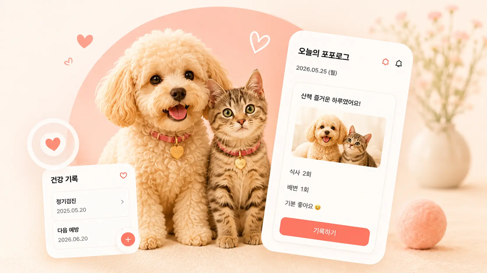

포포로그와 함께한 모든 순간,
포포로그로
포포로그로
가장 따뜻하게
기록하는 하루
일상, 건강, 식사, 산책, 병원 기록까지
가족과 함께 소중한 추억을 남기고 오래 간직하세요.

-
일상 기록
식사, 산책, 배변, 기분 등 매일의 소중한 일상을 기록해요.
-
건강 관리
병원 방문, 예방접종, 약 복용까지 건강 기록을 체계적으로 관리해요.
-
가족 공유
가족과 함께 기록하고 소중한 순간을 함께 나눠요.
-
추억 보관
사진과 메모로 추억을 저장하고 오래도록 간직하세요.
POPOLOG STORY
기록은 사랑이 되고
기록은 사랑이 되고
추억이 됩니다
따뜻한 순간들이 모여
우리 가족만의 이야기가 됩니다.
PopoLog이
특별한 이유
-
기억해줘요
기록 알림으로 중요한 순간을
놓치지 않아요. -
병원 기록도 한눈에
진료 내역, 약 복용, 예방접종까지
체계적으로 보관해요. -
함께하는 가족 타임라인
여러 가족이 함께 기록하고
서로의 시간을 공유해요. -
안전하고 프라이빗하게
소중한 기록은 안전하게 보호되며,
언제든 내보낼 수 있어요.

지금 PopoLog을 시작하고
우리 아이의 하루를 따뜻하게 기록하세요